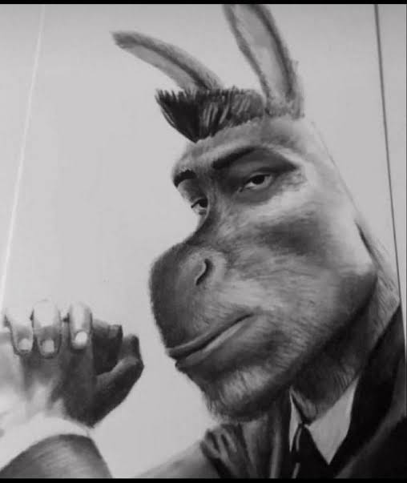
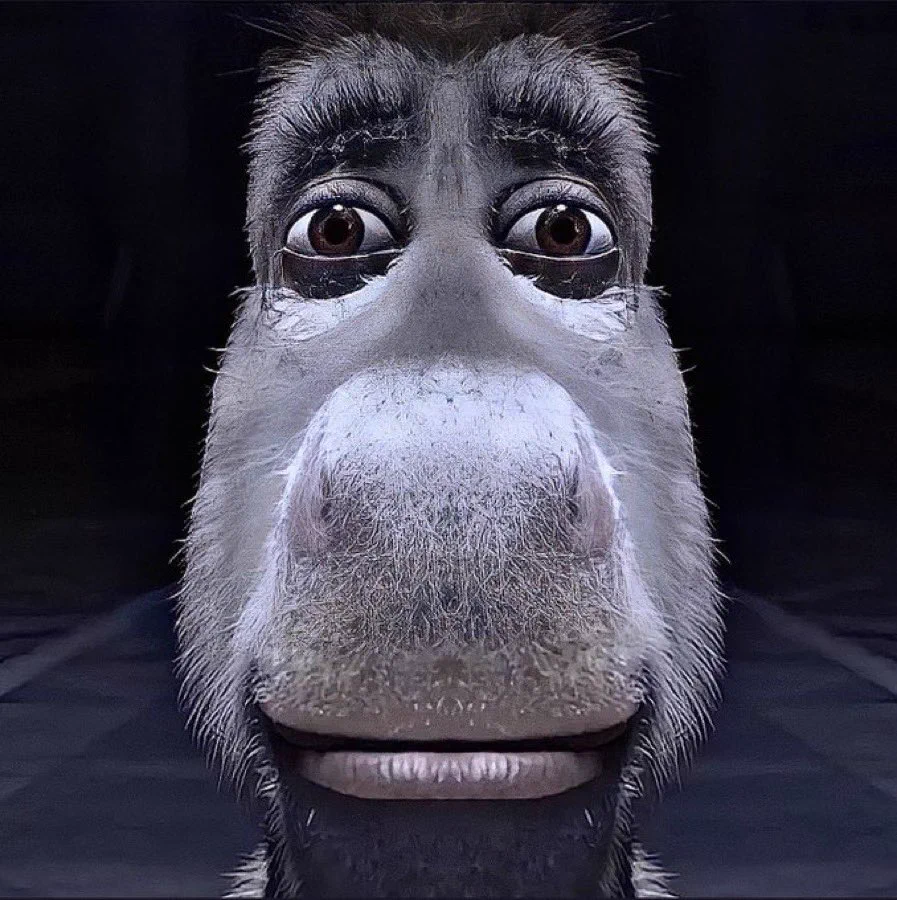
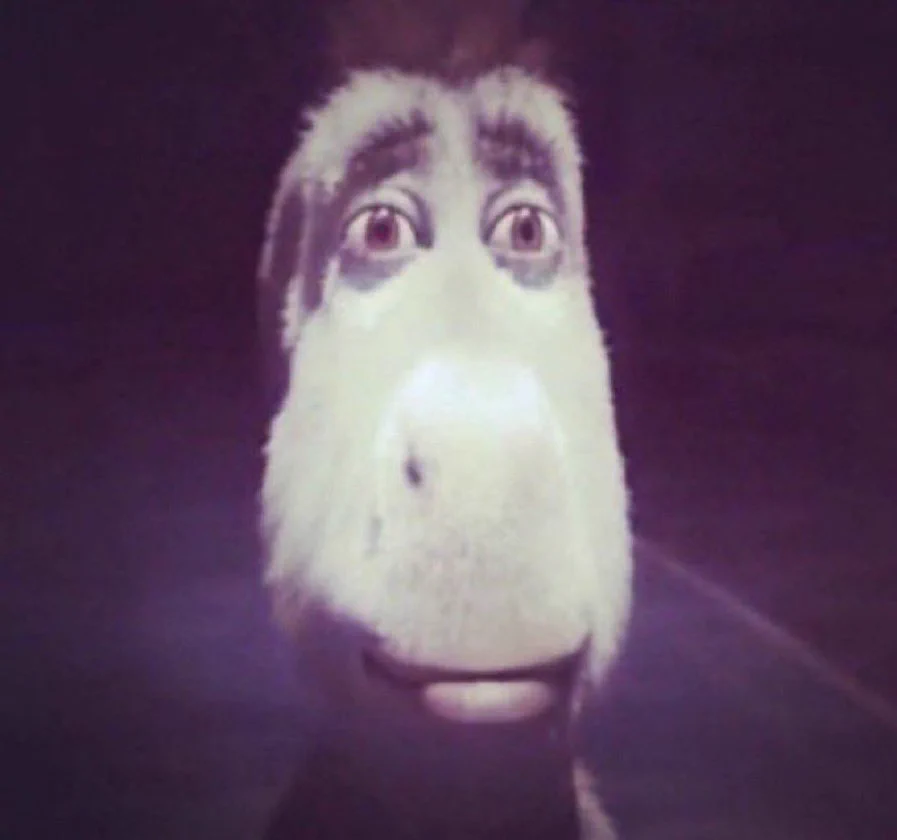

L'Âne (Donkey en version originale) est un âne de fiction doué de la parole et l'un des personnages principaux de la série de films Shrek. Il a 30 ans (d’après l’âge du doubleur) possède une compagne, une dragonne et six enfants, mi-ânes mi-dragons, surnommés les dranons. Il est doublé par Eddie Murphy, dans la version originale, et par Med Hondo dans la version française (qui est la voix française principale d'Eddie Murphy).


Le passé de L'Âne est assez peu connu. Avant sa rencontre avec Shrek, la fermière auquel il appartenait était sur le point de le vendre. On apprend dans le deuxième film que sa vie à la ferme n'était pas des plus plaisantes : des enfants le tapaient en le prenant pour une piñata et la fermière ne semblait pas le porter dans son cœur. Dans le premier film, L'Âne s'attache très rapidement à l'ogre auquel il doit la liberté et l'accompagne dans sa quête pour libérer la princesse Fiona de sa tour. C'est dans cette même tour qu'il fait la connaissance de Dragonne, qui deviendra sa femme. Malgré des disputes avec Shrek, ces derniers deviennent meilleurs amis, si bien que dans le deuxième film, L'Âne accompagne Shrek et Fiona pour rendre visite aux parents de cette dernière. Alors que Shrek cherche à prendre une potion pour devenir beau, L'Âne, en ayant également ingurgité, se transforme en cheval jusqu'à ce que le sort soit annulé. Au cours de cette nouvelle aventure, ils se lient d'amitié avec Potté, qui s'intègre à la bande formée alors avec Pinocchio, les Trois Petits Cochons, P'tit Biscuit et compagnie. Lors du troisième film, L'Âne accompagne Shrek qui souhaite convaincre un cousin éloigné de Fiona, un certain Arthur, de devenir roi et ainsi régner sur Fort Fort Lointain à leur place. C'est ici qu'il devient père de six dragons. Dans le quatrième film, dans la réalité parallèle créée par Shrek, L'Âne est à nouveau un inconnu. Il rencontre Shrek dans la Forêt alors qu'il tombe dans un piège à cause d'une gaufre, son péché mignon.
